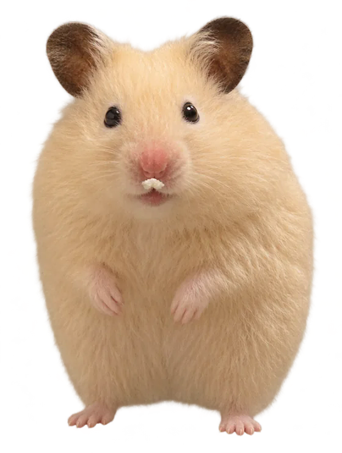

01 / WEB & EXPERIENCE
SHITEN
ひとつのものを、いろんな視点から見てみる。ウェブで体験をつくる試み。
目を合わせたら、
もう逃げられない。
拾って、眺めて、考えて、つくる。
いろんな「好き」と「気になる」を詰め込んだ、KANAの小さな宇宙です。
かなちの小さな仲間。
ここにも、ひとつ好きなものを飾っておく。

気になったら、まず近づいてみる。
観察して、調べて、ときどき形にする。
何かひとつの肩書きよりも、
「何を面白がっているか」で知ってほしい。
ひとつめの
自己紹介は、
紙の下。
つい拾ってしまうもの。
気がつくと見入ってしまうもの。
好きなものをタップしてみて。
形も色も、同じものがひとつもない。拾って、触って、並べるだけで、しばらく楽しめる。
ひとつのものを、いろんな視点から見てみる。ウェブで体験をつくる試み。
ものづくりの背景を、もっと伝わる体験へ。展示、企画、発信に取り組む。
思いついたら、まず形にしてみる。サイト、観察、アイデアの断片。
いまの興味も、これからの方向も、
きっと変わっていく。
だからここは、更新され続ける場所。
やってみたいこと。途中で気が変わったこと。まだ誰にも見せていない考え。
完成したものだけじゃなくて、途中のものにも、けっこう惹かれる。
小さなひみつ：このサイトには、もうひとつ入口が隠れています。